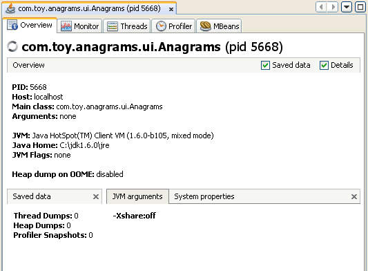

애플리케이션 개요보기
VisualVM은 애플리케이션별로 탭을 생성해서 로컬및 원격 애플리케이션을 위한 데이터를 제공한다. VisualVM에서 애플리케이션을 열면, 각각의 애플리케이션은 메인창에 새로운 탭으로 열린다. 여러개의 탭을 여는 것도 가능하다.
Overview탭은 로컬 애플리케이션 과 원격 애플리케이션의 애플리케이션 데이터를 보여줄때 기본적으로 열린다.
Overview
Overview 탭은 애플리케이션과 런타임 환경에 대한 다음의 일반적인 정보를 보여준다.
- PID. 애플리케이션의 프로세스 아이디. 프로세스 아이디는 Applications창의 애플리케이션 노드뒤에 표기된다.
- Host. 애플리케이션이 실행중인 시스템의 위치
- Main class. main 메서드를 가진 클래스
- Arguments. 애플리케이션을 시작할때 전달된 옵션을 표기
- JVM. JVM소프트웨어의 JDK버전
- Java Home. JDK의 소프트웨어의 디렉터리 위치
- JVM flags. JVM소프트웨어가 사용하는 플래그(flags)
- Heap dump on OOME. OutOfMemoryException이 발생할때 힙덤프를 남길지에 대한 여부를 표기. 애플리케이션 팝업메뉴에서 활성화및 비활성화가 가능하다.
Saved Data
VisualVM이 애플리케이션에 대해 저장한 애플리케이션 정보를 표시하는 하위탭
JVM Software Arguments.
애플리케이션을 시작할때 JVM소프트웨어에 전달된 인자에 대한 정보를 표시하는 하위탭
System Properties
JVM소프트웨어가 실행되는 시스템에 대한 정보를 표시하는 하위탭